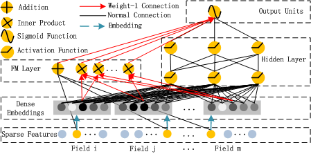

主要分为deep和wide两部分，deep模块使用deep learning学习高阶feature interaction，wide模块使用FM提取低阶feature interaction，deep和wide两个模块共享输入和embeddings，最终通过output layer进行结合，输出CTR，在训练时，deep和wide组成一个整体model，同时参与训练；
bench-mark data: crito dataset, 包含4500w用户的点击行为记录，13个连续型特征，26个离散型特征；以9：1的比例进行训练和测试；测试集结果：AUC=0.8007, LogLoss=0.45083.
commercial data: 某公司app store当中game center的连续8天的点击行为记录，共计10亿条记录，其中7天作为训练，1天作为测试；测试集结果：AUC=0.8715, Logloss=0.02618.
与FNN和PNN的paper参数一致：

假设训练集有n个样本，m个特征，则一个输入样本可以表示为：
每个field代表一个特征，其中离散特征用one hot encoding向量表示，连续特征用其连续值或者其分布情况的one hot encoding向量表示，所以假设输入x是一个d维向量
input layer的输入特征一般都较为稀疏、高维；
embedding layer在DNN当中的主要作用是降维，同时可以更有效的帮助FM提取二阶interactions, embedding layer结构具备如下特点：
不论输入特征的大小是多少，其embeddings大小都是固定的k
FM和DNN共享latent vector，FM当中二阶feature interactions是根据latent vector的内积计算的，在DNN当中latent vector是从input vector变换到embedding vector所需的参数；
用\(e_i\)表示第i个特征对应的embedding,则embedding layer的输出是：
FM主要包括三层：input layer, embedding layer和fm layer，最终将结果输出到output layer；FM的主要目标是获取一阶和二阶feature interactions:
order-1 interaction
各个输入特征加权求和以生成一阶interaction;
order-2 interaction
实质上每个输入特征值对应一个one hot encoding向量，那么每个特征值同样对应有一个feature latent vector:\( V_i \)，通过latent vector之间的内积可以更有效的提取二阶feature interactions.
FM component可以表示为一个加法单元和一个内积单元：
DNN主要包括三层：input layer, embedding layer和hidden layer，hidden layer的结果输出到output layer; Deep Component的主要目的是学习高阶feature interactions.
input layer的input vector经过embedding layer变成了\(a^{(0)}\)，然后输入到DNN当中，若令\(l\)表示神经网络层的深度，则有：
若DNN的深度为H，则DNN的输出结果表示为：
output layer简单的将FM和DNN模块的输出结果求和，再通过一个sigmoid函数转换为CTR：